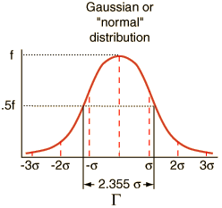
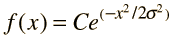
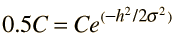
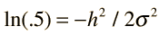
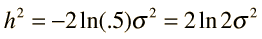
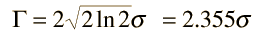

Halfwidth of a Gaussian Distribution
The full width of the
gaussian curve
at half the maximum may be obtained from the function as follows.


Let x=h at half the maximum height.

Taking the
natural log
of both sides:


The full width is 2h.

Index
Applied statistics concepts
HyperPhysics
*****
HyperMath
*****
Algebra
Go Back